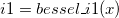

/math-2f7828c97430a57b061a8d47864a43b2.png "I_1(x)") .The function is based on Chebyshev expansions.
.The function is based on Chebyshev expansions. evaluates an approximation to the modified Bessel function of the first kind,.The function is based on Chebyshev expansions.
For more information please review the s17afc function in the NAG document.